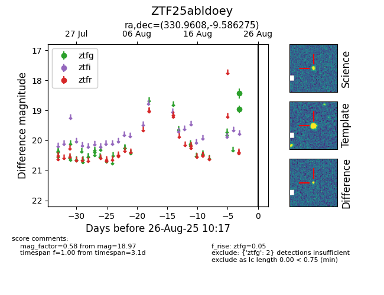

Target ZTF25abldoey at 2025-08-26 10:17, see:
FINK: fink-portal.org/ZTF25abldoey
Lasair: lasair-ztf.lsst.ac.uk/objects/ZTF25abldoey
ALeRCE: alerce.online/object/ZTF25abldoey
alt names
ZTF25abldoey (ztf,fink)
coordinates:
equatorial (ra, dec) = (330.9608,-9.58627)
galactic (l, b) = (48.7412,-46.81329)
photometry
last ztfg=18.97
2 ztfg detections
